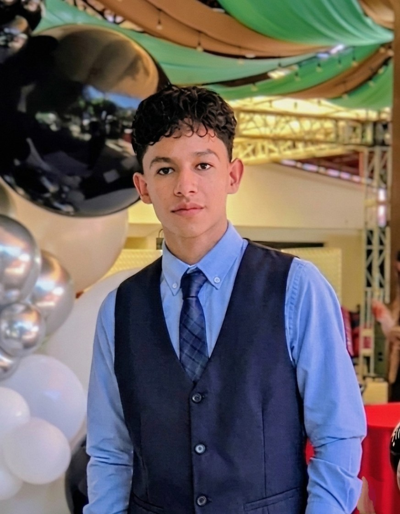

Egresado de la carrera de Tecnologías de la Información, con enfoque en desarrollo de software, diseño web y diseño digital. He desarrollado páginas web y sistemas utilizando tecnologías como PHP, HTML, CSS y JavaScript.
También cuento con conocimientos en sistemas operativos como Windows, Linux y Kali Linux, además de experiencia en bases de datos, configuración de routers y proyectos con Arduino.
Realicé prácticas profesionales en la Secretaría de Infraestructura, Comunicaciones y Transportes del Estado de Guerrero, donde fui responsable del desarrollo de sistemas y páginas web institucionales.
Además, tengo experiencia en diseño gráfico, edición de imágenes, creación de logotipos, ilustración digital, edición de video, diseño editorial y diseño UI/UX moderno.